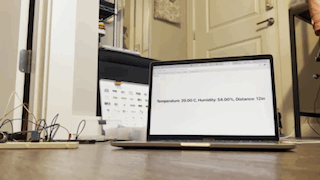
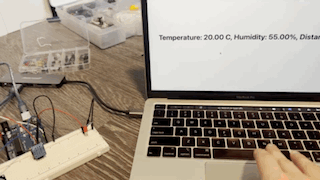
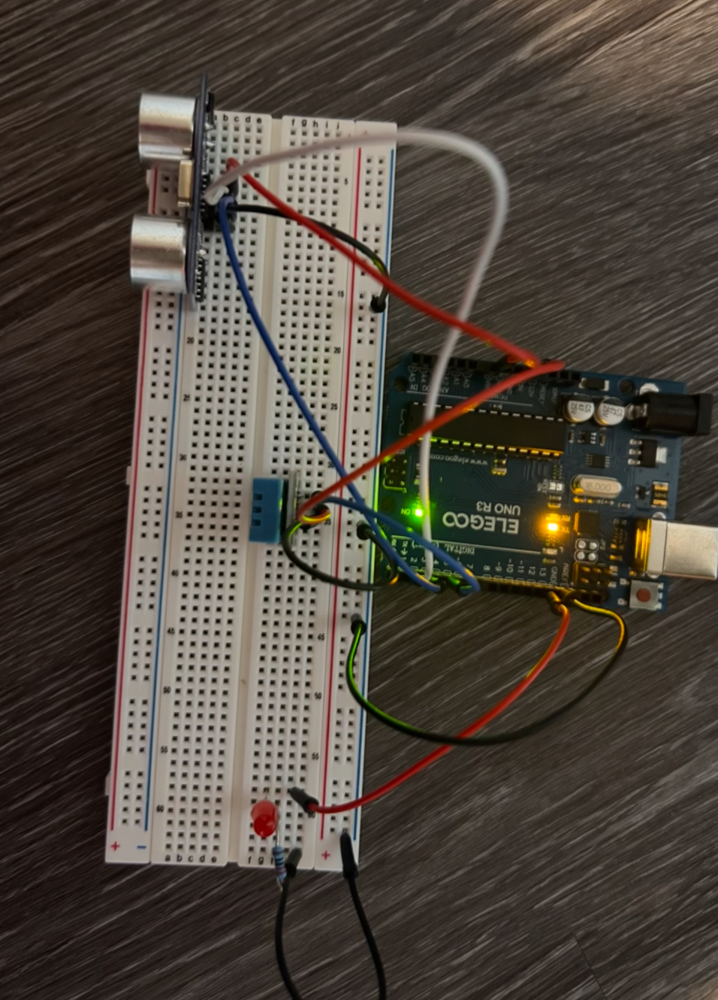
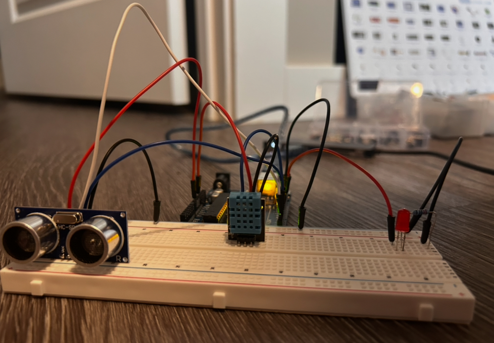
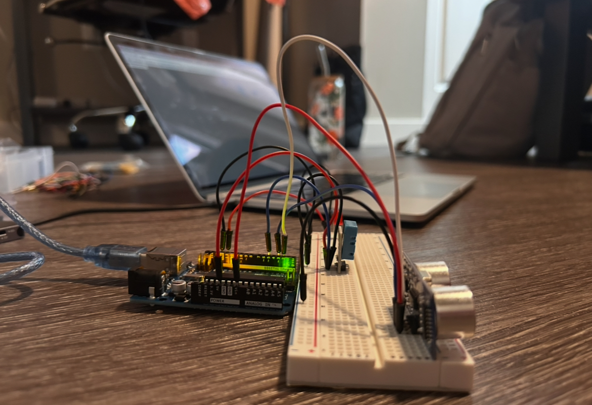
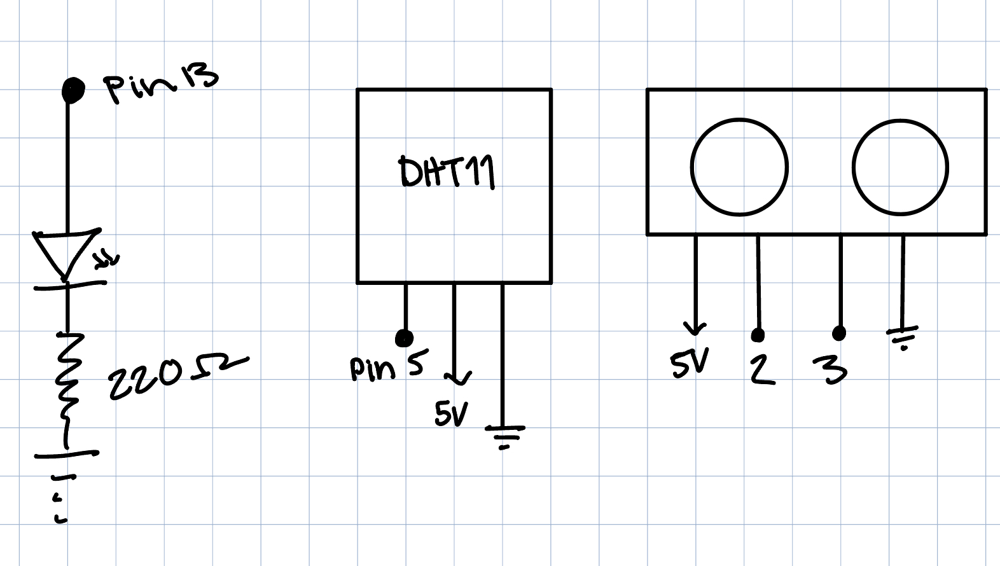

Some of the firmware is code from the ultrasonic sensor arduino sample by Tom Igoe: https://www.arduino.cc/en/Tutorial/BuiltInExamples/Ping. I have noted where this is the case.
To help with this project I used notes from in class!
This is my circuit in action!
GIF 1: blowing on the DHT sensor to change humidity and distance readings. I know its hard to see the exact numbers but hopefully you can see the shape change! I don't know how to make the gif clearer.
GIF 2: Turning the LED on
Images!
Circuit
I included different angles to make it easier to see connections
The circuit is pretty straightforward. I just connected each sensor and the led to their own pins so I could communicate with them all indivually to get the right readings. They are all separate but share the same ground as usual. I don't really know what else to say about the connections!
  Schematic!

You need at least 160 ohms of resistance, so I chose the next closest higher number I have in resistors, 220.
Firmware Code!
//includes the dht11 library
#include
// initializes humitity and temp sensore
dht DHT;
//pin number of the sensor's output
const int trigPin = 2;
//pin number of sensor input
const int echoPin = 3;
// led lights pin
const int ledPin = 13;
// sets pin two to be the data signal pin for the temp/hum sensor
const int DHT11_PIN = 5;
//runs once at begining of program
void setup() {
// lights are an output but are initially off
pinMode(ledPin, OUTPUT);
//sensor trigger is an output, initially off
pinMode(trigPin, OUTPUT);
// sensor echo is an input, initially off
pinMode(echoPin, INPUT);
// sets led pin as an output, initally off
pinMode(ledPin, OUTPUT);
// starts the serial feed, baud rate 9600
Serial.begin(9600);
// timeout for parsing
Serial.setTimeout(10);
}
//runs forever
void loop() {
// if there's serial data
if (Serial.available() > 0) {
// read it
char data = Serial.read();
If it reads a '1' character
if (data == '1') {
// turn the led on
digitalWrite(ledPin, HIGH);
//if not 1
} else {
// turn led off
digitalWrite(ledPin, LOW);
}
}
/* from here to the end of this little section is example code
I changed it to work with a four pronged sensor rather than 3, I also changed some of the documenting comments*/
// establish variables for duration of the ping, and the distance result
// in inches and centimeters:
long duration, inches, cm;
// short LOW pulse beforehand to ensure a clean HIGH pulse
digitalWrite(trigPin, LOW);
// delays for 2 microseconds
delayMicroseconds(2);
// sensor sends of a sonic pulse
digitalWrite(trigPin, HIGH);
// delays for 5 microseconds
delayMicroseconds(5);
// stops high pulse
digitalWrite(trigPin, LOW);
// sensor recieves time it takes for an echo of pulse off an object
duration = pulseIn(echoPin, HIGH);
// convert the time into a distance
inches = microsecondsToInches(duration);
// gets temp and humitiy reading from sensor
int sensorReading = DHT.read11(DHT11_PIN);
/*End of example code*/
// prints whats in quotes to screen
Serial.print("Temperature: ");
// prints temperature
Serial.print(DHT.temperature);
// prints whats in quotes to screen
Serial.print(" C, ");
// prints whats in quotes to screen
Serial.print("Humidity: ");
// prints humidity
Serial.print(DHT.humidity);
// prints whats in quotes to screen
Serial.print("%, ");
// prints whats in quotes to screen
Serial.print("Distance: ");
// prints inches
Serial.print(inches);
// prints whats in quotes to screen
Serial.println("in");
/* end of example code based section */
// delay for 0.1 seconds
delay(500);
}
// converts microseconds to inches (from example code)
long microsecondsToInches(long microseconds) {
// According to Parallax's datasheet for the PING, there are 73.746
// microseconds per inch (i.e. sound travels at 1130 feet per second).
// This gives the distance travelled by the ping, outbound and return,
// so we divide by 2 to get the distance of the obstacle.
// See: https://www.parallax.com/package/ping-ultrasonic-distance-sensor-downloads/
return microseconds / 74 / 2;
}
Webpage Code!
//matchs the baud rate in your Arduino sketch
const BAUD_RATE = 9600;
// Declare global variables
let port, connectBtn;
// runs once at beginning of program
function setup() {
// Run serial setup function (below)
setupSerial();
// Create a canvas that is the size of our browser window.
// windowWidth and windowHeight are p5 variables
createCanvas(windowWidth, windowHeight);
// p5 text settings. BOLD and CENTER are constants provided by p5.
textFont("system-ui", 50);
// text is bolded
textStyle(BOLD);
//text is aligned to be in the center of the screen
textAlign(CENTER, CENTER);
}
// draw function runs forever
function draw() {
// Check whether the port is open (see checkPort function below)
const portIsOpen = checkPort();
// If the port is not open, exit the draw loop
if (!portIsOpen) return;
// reads the port until it reaches a line break
let str = port.readUntil("\n");
// If we didn't read anything, return.
if (str.length == 0) return;
// clears the screen
clear();
//white background
fill(0);
// black outline
stroke(255);
// string read from port printed in center of screen
text(str, width / 2, height / 2);
// if the space bar is pressed
if (keyIsDown(32)) {
//write character 1 to port (turns on led)
port.write('1');
}
}
// BELOW IS FROM CLASS EXAMPLE FILES FOR SETTING UP WEB SERIAL
// Three helper functions for managing the serial connection.
function setupSerial() {
port = createSerial();
// Check to see if there are any ports we have used previously
let usedPorts = usedSerialPorts();
if (usedPorts.length > 0) {
// If there are ports we've used, open the first one
port.open(usedPorts[0], BAUD_RATE);
}
// create a connect button
connectBtn = createButton("Connect to Arduino");
// Position the button in the top left of the screen.
connectBtn.position(5, 5);
// When the button is clicked, run the onConnectButtonClicked function
connectBtn.mouseClicked(onConnectButtonClicked);
}
function checkPort() {
if (!port.opened()) {
// If the port is not open, change button text
connectBtn.html("Connect to Arduino");
// Set background to gray
background("gray");
return false;
} else {
// Otherwise we are connected
connectBtn.html("Disconnect");
return true;
}
}
function onConnectButtonClicked() {
// When the connect button is clicked
if (!port.opened()) {
// If the port is not opened, we open it
port.open(BAUD_RATE);
} else {
// Otherwise, we close it!
port.close();
}
}